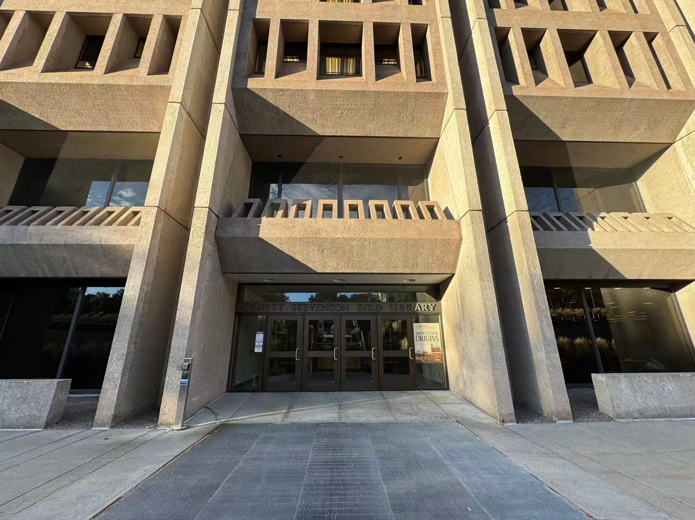

1
Gather belongings
The first step would be to gather all of their belongings necessary to their study session.
Keep it simple. Fuel up, relocate, work in focused blocks.
The first step would be to gather all of their belongings necessary to their study session.
Head to Schine Student Center and pick up food from their numerous options.
In addition to food, pick up a caffeine boost such as a coffee from Dunkin or an energy drink.
Next, head to Bird Library as it is a quiet location where you can focus and avoid being easily distracted.
When you arrive at Bird, head downstairs where you can enjoy your food and get started on your assignments.
While you are eating, make a checklist of what you want to get done to hold yourself accountable.
Once you finish your food, head to one of the top floors in Bird as it is quieter and more open seats will be available.

Once you find a nice place to study, put your phone into your backpack so you will not be tempted to use it when you are studying.
For every 25 minutes you work on assignments, give yourself a five minute break to keep you motivated. Make sure to hold yourself accountable to this schedule.
Once you complete all of the assignments on the checklist you made earlier, pack up your belongings and return back home after a job well done.